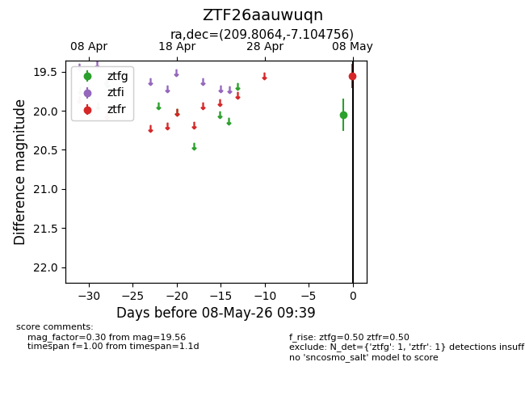
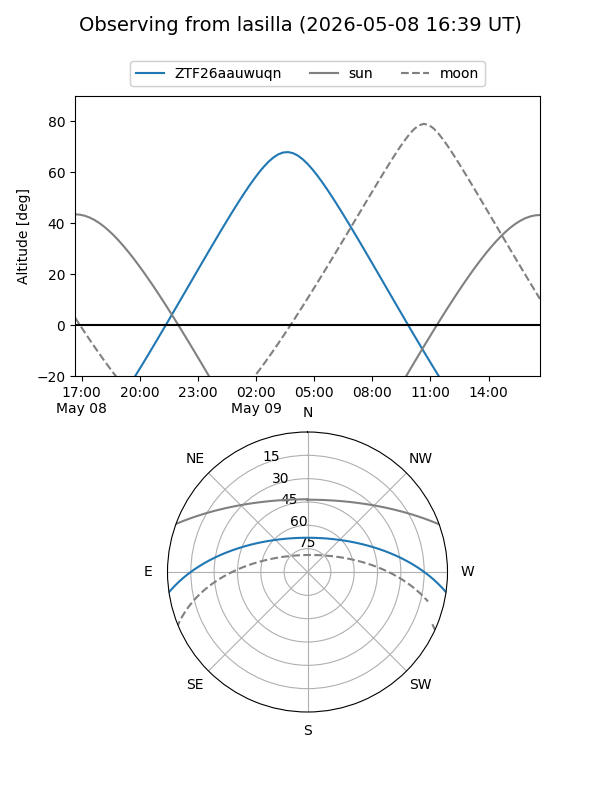
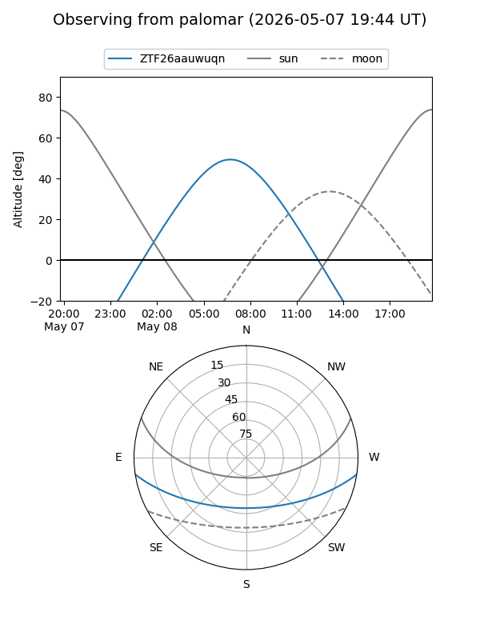

ZTF26aauwuqn
Target ZTF26aauwuqn at 2026-05-08 09:41
Aliases and brokers:
FINK: link
Lasair: link
ALeRCE: link
alt names
ZTF26aauwuqn (ztf,fink_ztf)
Coordinates:
equatorial (ra, dec) = 209.8064,-7.10476
equatorial (HMS+DMS) = 13:59:13.53,-07:06:17.12
galactic (l, b) = (330.9793,+52.03679)
Flags:
Photometry:
last ztfg=20.05, ztfr=19.56
1 ztfg, 1 ztfr detections
Lightcurve

Visibility


Additional plots